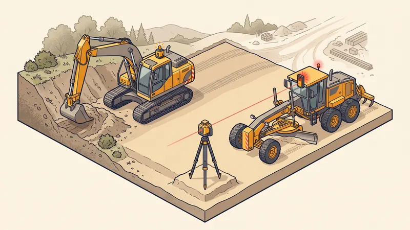

Prix Nivellement de Terrain au m² en 2026 : Guide & Tarifs
Vous souhaitez aplanir un terrain pour poser une terrasse, semer un gazon impeccable ou préparer une dalle ? Le nivellement de terrain est l'étape clé qui conditionne la réussite de tout projet d'aménagement extérieur ou de construction. Dans ce guide complet, nous détaillons les prix du nivellement au m² en 2026 à Aix-en-Provence et en PACA, la méthode professionnelle de mise à niveau, les engins utilisés et les pièges à éviter pour budgétiser sereinement vos travaux.

Nivellement, décaissement, terrassement : quelle différence ?
Ces trois termes sont souvent confondus alors qu'ils désignent des opérations distinctes. Bien les comprendre vous évitera des malentendus avec votre terrassier et des surcoûts inattendus.
- Le nivellement consiste à aplanir et régler la surface d'un terrain pour obtenir un niveau homogène, plan ou en pente douce maîtrisée. C'est l'opération de finition qui rend un terrain prêt à l'emploi (gazon, terrasse, plateforme).
- Le décaissement est le retrait d'une épaisseur de sol (10 à 40 cm en général) sur une zone définie, pour créer une plateforme stable destinée à recevoir une dalle, un dallage ou un enrobé.
- Le terrassement est le terme générique qui englobe l'ensemble des mouvements de terre : déblai, remblai, fouilles, décapage et nivellement. Le nivellement n'est donc qu'une composante du terrassement.
À quoi sert un nivellement de terrain ?
La mise à niveau d'un terrain répond à de nombreux objectifs selon votre projet :
- Création d'un jardin et pose de gazon : une surface parfaitement réglée garantit un arrosage homogène et une tonte facile.
- Pose d'une terrasse (bois, composite, dalles) : la planéité conditionne la stabilité et l'écoulement des eaux.
- Préparation d'une construction ou d'une dalle : la plateforme doit être plane et compactée avant coulage.
- Terrassement de piscine et abords : niveler les plages et le pourtour du bassin.
- Rattrapage d'un terrain en pente ou bosselé après travaux ou démolition.

Prix du nivellement de terrain au m² en 2026
Le coût du nivellement dépend avant tout de la prestation demandée : simple réglage de surface, décaissement, ou opérations lourdes de déblai-remblai sur terrain en pente. Voici les fourchettes constatées en 2026 en région PACA.
| Prestation de nivellement | Prix au m² (HT) | Observations |
|---|---|---|
| Nivellement simple (sol meuble, réglage de surface) | 3 - 8 €/m² | Aplanissement léger sans excavation |
| Nivellement avec décaissement | 10 - 25 €/m² | Retrait de 10 à 40 cm de sol + réglage |
| Terrain en pente (déblai-remblai) | 15 - 40 €/m² | Mouvements de terre importants + compactage |
| Apport de terre végétale | 25 - 45 €/m³ | Fourniture, livraison et réglage compris |
| Compactage au rouleau / plaque | 2 - 6 €/m² | Selon nombre de passes et matériau |
Ces tarifs incluent généralement la main-d'oeuvre et l'engin (mini-pelle ou tractopelle). L'évacuation de la terre excédentaire et l'apport de matériaux se facturent en supplément. Pour un chiffrage précis, consultez aussi notre guide des prix du terrassement au m².
Les facteurs qui influencent le prix du nivellement
D'un chantier à l'autre, le prix au m² peut varier du simple au quintuple. Voici les principaux paramètres pris en compte dans un devis de mise à niveau de terrain.
| Facteur | Impact sur le prix |
|---|---|
| Surface à niveler | Effet d'échelle : le prix au m² baisse au-delà de 500 m² |
| Dénivelé / pente du terrain | Plus la pente est forte, plus le volume de déblai-remblai augmente |
| Nature du sol | Sol meuble facile ; calcaire, cailloux et roche majorent fortement |
| Accessibilité du chantier | Accès étroit = mini-pelle obligatoire, +10 à 25 % |
| Type d'engin (mini-pelle / tractopelle / niveleuse) | La mini-pelle est plus lente ; la niveleuse rentabilise les grandes surfaces |
| Évacuation ou apport de terre | Transport au m³ + taxes de décharge ou achat de terre végétale |
Obtenez Votre Devis Nivellement Gratuit
Chez STP Terrassement, nous nivelons et aplanissons votre terrain à Aix-en-Provence et dans toute la région PACA. Nos devis sont détaillés, transparents et sans engagement, livrés sous 24h.
Demandez votre devis gratuitLa méthode professionnelle pour niveler un terrain
Un nivellement de terrain réalisé dans les règles de l'art suit une succession d'étapes précises. C'est cette rigueur qui garantit un résultat durable, sans tassements ni flaques d'eau.
- Relevé des niveaux au laser : avant toute intervention, on mesure les points hauts et bas du terrain à l'aide d'un laser rotatif et d'une mire. On définit le niveau fini de référence et la pente d'évacuation des eaux (1 à 2 %).
- Débroussaillage et décapage : retrait de la végétation, des souches et de la couche de terre végétale (15 à 30 cm) que l'on stocke pour la réutiliser en finition.
- Déblai-remblai : on retire la terre des points hauts (déblai) et on comble les creux (remblai) par couches successives afin d'équilibrer le terrain.
- Compactage : chaque couche de remblai est compactée au rouleau vibrant ou à la plaque vibrante pour éviter les tassements ultérieurs.
- Réglage et finition au m² : passage final à la lame ou au godet de réglage, contrôle laser de la planéité (tolérance ±2 cm), puis remise en place éventuelle de la terre végétale pour un jardin prêt à ensemencer.
Les engins de nivellement
Le choix de l'engin dépend de la surface, de l'accès et du volume de terre à déplacer :
- La mini-pelle (1,5 à 5 t) : idéale pour les petits jardins et les accès étroits (portails, passages entre maisons).
- Le tractopelle : polyvalent, parfait pour les surfaces moyennes combinant décaissement, déplacement et réglage.
- La niveleuse ou le bulldozer : réservés aux grandes plateformes et aux terrains de plusieurs milliers de m² où la précision de la lame fait gagner un temps précieux.
- La règle laser et le laser rotatif : outils de contrôle indispensables pour atteindre une planéité au centimètre près.
Nivellement de terrain en PACA : les spécificités locales
Autour d'Aix-en-Provence et dans toute la Provence-Alpes-Côte d'Azur, le nivellement présente des particularités qui pèsent sur le prix :
- Sols calcaires et caillouteux : très répandus, ils ralentissent le réglage et peuvent imposer un godet de tri ou un brise-roche pour casser les bancs durs.
- Gestion des pentes : le relief provençal génère de nombreux terrains en pente nécessitant déblai-remblai et parfois la création de restanques ou de murs de soutènement.
- Terre végétale rare et précieuse : sur des sols souvent pauvres et pierreux, l'apport de terre végétale de qualité est fréquent pour réussir un gazon ou des plantations.
- Gestion des eaux pluviales : les orages méditerranéens imposent de soigner les pentes d'écoulement pour éviter ruissellement et stagnation.
Exemple de chantier réel à Aix-en-Provence
Mise à niveau d'un jardin en pente à Venelles
Projet : Aplanir un jardin de 420 m² en pente pour créer une zone plane engazonnée et l'emplacement d'une future terrasse.
Localisation : Venelles, au nord d'Aix-en-Provence.
Dénivelé : 1,40 m entre le point haut et le point bas du terrain.
Durée : 3 jours ouvrés.
Défis rencontrés : Présence de bancs calcaires durs sous 40 cm de terre, accès limité par un portail de 2,60 m de large interdisant les gros engins.
Solution STP : Nous avons mobilisé une mini-pelle 5 t équipée d'un godet de réglage pour franchir le portail, réalisé un relevé laser complet puis un déblai-remblai compacté par couches de 25 cm. La terre végétale décapée en début de chantier a été stockée puis réétalée en finition sur 15 cm, évitant tout achat de terre.
Résultat : Plateforme livrée plane avec une pente d'évacuation de 1,5 %, planéité contrôlée au laser (±2 cm), jardin prêt à ensemencer. Facture finale conforme au devis (4 980 € TTC) grâce à la réutilisation de la terre en place.
Les erreurs courantes à éviter
- Niveler sans relevé laser préalable. Sans mesure précise des niveaux, le terrain fini présente des contre-pentes qui provoquent flaques et stagnation d'eau.
- Oublier la pente d'évacuation des eaux. Un terrain parfaitement plat retient l'eau. Une pente douce de 1 à 2 % est indispensable pour drainer les pluies.
- Négliger le compactage du remblai. Une terre rapportée non compactée se tasse en quelques mois, créant des creux et fissurant dalles et terrasses.
- Sous-estimer le volume de terre à évacuer ou à apporter. Le foisonnement (20 à 40 %) fausse les estimations : 100 m³ déblayés deviennent 130 m³ à transporter.
- Confondre nivellement et simple ratissage. Un coup de râteau ne remplace pas un réglage d'engin contrôlé au laser sur une grande surface.
- Choisir un prestataire sans garantie décennale ni assurance. En cas de tassement affectant une dalle, seule la décennale protège votre investissement.
Questions fréquentes
Quel est le prix d'un nivellement de terrain au m² en 2026 ?
Le prix d'un nivellement de terrain se situe entre 3 et 8 €/m² pour un simple aplanissement de sol meuble, 10 à 25 €/m² avec décaissement et 15 à 40 €/m² pour un terrain en pente nécessitant des opérations de déblai-remblai. En PACA, les sols calcaires et caillouteux tirent ces tarifs vers le haut.
Quelle est la différence entre nivellement, décaissement et terrassement ?
Le nivellement consiste à aplanir et régler la surface d'un terrain pour obtenir un niveau homogène. Le décaissement est le retrait d'une épaisseur de sol sur une zone définie pour créer une plateforme. Le terrassement est le terme générique englobant l'ensemble des mouvements de terre (déblai, remblai, fouilles, nivellement).
Combien coûte le nivellement d'un terrain de 500 m² à Aix-en-Provence ?
Pour 500 m² de nivellement simple sur sol meuble, comptez entre 1 500 € et 4 000 € TTC. Avec décaissement et léger réglage de pente, la fourchette monte à 5 000-12 500 €. Un terrain en forte pente avec déblai-remblai peut dépasser 15 000 € selon le volume de terre déplacé.
Faut-il un permis pour niveler son terrain ?
Un simple nivellement de jardin ne nécessite pas d'autorisation. En revanche, dès qu'une modification du relief dépasse 2 m de hauteur (déblai ou remblai) ou affecte plus de 100 m² avec exhaussement/affouillement, une déclaration préalable de travaux en mairie est obligatoire.
Quels engins sont utilisés pour niveler un terrain ?
Selon la surface et l'accès, on utilise une mini-pelle (petits jardins, accès étroits), un tractopelle (polyvalent, moyennes surfaces), une niveleuse ou un bulldozer (grandes plateformes) et une règle laser ou un laser rotatif pour contrôler les niveaux au centimètre près.
Le nivellement comprend-il l'apport de terre végétale ?
Non, sauf mention explicite au devis. L'apport de terre végétale se facture en supplément, généralement 25 à 45 €/m³ livré et réglé. Pour préparer un futur gazon, comptez 10 à 20 cm de terre végétale soit 0,10 à 0,20 m³ par m².
Combien de temps dure un nivellement de terrain ?
Un nivellement de jardin de 300 à 500 m² prend généralement 1 à 3 jours. Un terrain en pente avec déblai-remblai important et évacuation de terre peut nécessiter 4 à 8 jours selon le volume et l'accessibilité du chantier.
Pourquoi le nivellement coûte-t-il plus cher en Provence ?
Les sols provençaux sont souvent calcaires, caillouteux et durs, ce qui ralentit le réglage et peut imposer un godet de tri ou un BRH. Les terrains en pente, fréquents autour d'Aix-en-Provence, demandent davantage de déblai-remblai et de compactage, augmentant le prix au m².
Pour aller plus loin
Pourquoi faire appel à un pro comme STP Terrassement
Confier le nivellement de votre terrain à STP Terrassement, c'est s'appuyer sur une entreprise locale implantée à Simiane-Collongue (13109) et intervenant chaque jour à Aix-en-Provence et dans toute la région PACA. Nos équipes disposent d'un parc d'engins récents (mini-pelles 1,5 t à pelles 20 t, tractopelles, godets de réglage, lasers rotatifs), d'une garantie décennale en cours de validité et de plus de 15 ans d'expérience sur des chantiers d'aplanissement et de mise à niveau. Nous établissons un devis détaillé gratuit et sans engagement sous 24h, nous respectons les plannings annoncés, nous tenons le budget validé et nous fournissons à la réception tous les documents de conformité. Choisir STP, c'est la tranquillité d'un interlocuteur unique, transparent et aligné sur vos intérêts. Demandez votre devis gratuit en ligne ou appelez-nous au 07 45 14 20 49 pour échanger directement avec un chargé d'affaires. Vous pouvez aussi nous écrire via notre page contact.